Aether
Designing an AI research assistant that streamlines the research process while learning and evolving with researchers
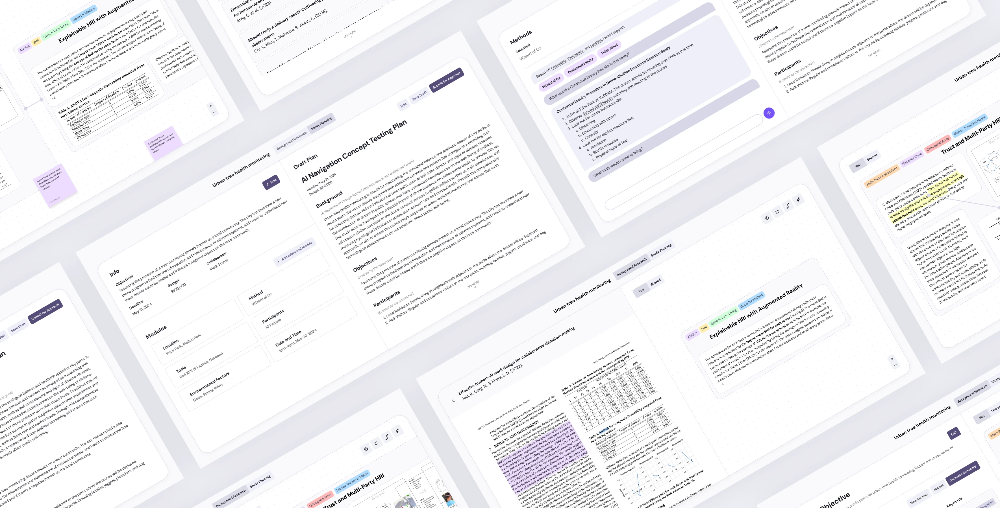
User Research
Prototyping
Usability Testing
2 Product Designer
1 UX Engineer
Gaining real-world insights in early human-AI teaming research to bridge the gap between research and product
Honda Research Institute (HRI) drives Honda's long-term strategy through innovative research in areas like human-AI collaboration. To bridge the gap between research and real-world product development, HRI wants to increase early-stage field testing to collect feedback that informs better product design.
To achieve this, HRI wants to increase early-stage field testing, but transitioning from lab to real-world studies presents significant challenges for their researchers.
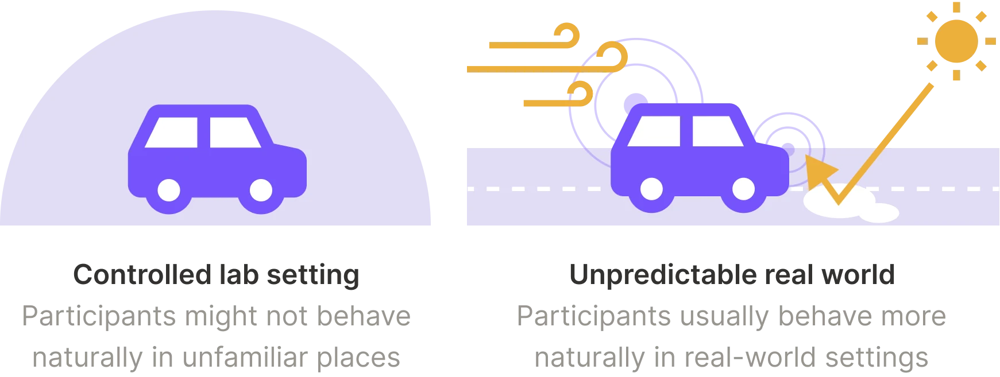
However, transitioning to real-world studies presents challenges:
Unique context for each research project
Human-AI teaming research is highly qualitative, with each project having its unique background and context, making study planning a time-consuming process.
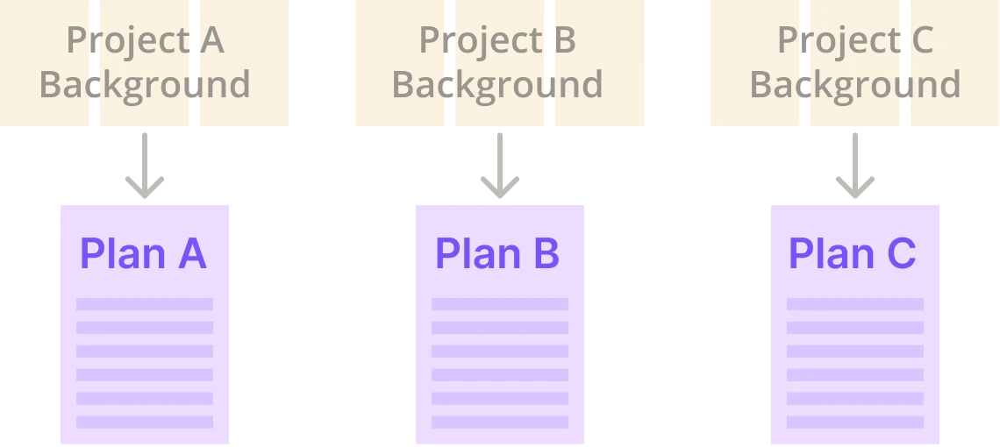
Complex planning for real-world testing
Compared to lab testing, real-world settings involve more unpredictability—such as weather conditions, location regulations, and logistics—adding complexity to implementing an in-field study.
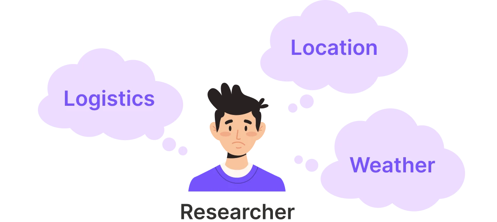
Aether: An AI research assistant that streamlines the research process while evolving with researchers
When optimizing human-AI teaming research, Aether learns from the content researchers provide, refining its responses through continuous interaction to better align with the organization's research methodology and specific needs.
In this project, I conducted user research (including user interview and usability testing), defined the main user flow, and designed the user interface of this product.
Understanding Barriers to Real-World Studies
Researchers with Strong Academic Background
Our target users are researchers at Honda Research Institute focused on human-AI teaming. They have strong academic backgrounds and are accustomed to rigorous research methodologies, but face growing pressure to bridge their findings with real-world product applications.
Interviewing Researchers and Analyzing Their Workflow by Co-creating Research Maps
To better optimize the process of gaining real-world insights, our team interviewed 9 researchers at Honda Research Institute and 12 academic researchers at Carnegie Mellon University. We co-created research maps with them to visualize their entire research process and identify bottlenecks.
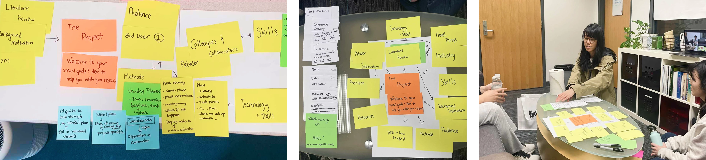
Research process maps co-created with researchers during the interviewsResearch is continuous, but planning and approvals slow progress
1. Background research is integral at every stage
Background research, including literature reviews, is integral at every stage. Researchers base decisions—ranging from study planning to data analysis—on their literature findings.
2. Study planning and approval are time-consuming
Writing a comprehensive study plan for real-world studies can take one week to a month, as it must align with the project timeline, budget, logistics, and safety regulations. Additionally, approval may take up to 2-3 months.
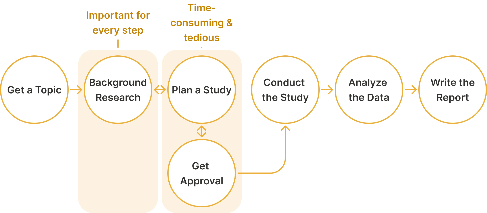
Improving study planning processes with an internal AI system that learns from the researchers themselves
Labeling Data in Background Research, Using it to Plan Studies
Our initial concept was to allow researchers to input background research findings and study details into the planning system, enabling the AI to generate a draft plan for them. The AI learns from the labeled data researchers provide during their normal workflow.
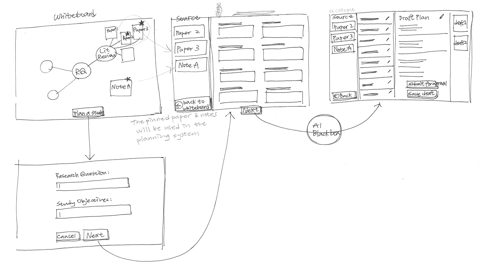
System Structure
1. Labeling data during background research
Researchers annotate key excerpts from papers and tag them with relevant research variables. This creates a structured knowledge base that the AI can learn from, contextualizing future study suggestions.
2. Using the labeled data for study planning
When planning a study, the AI draws on the labeled background research to generate relevant suggestions for study variables, protocols, and logistical considerations — creating a draft plan aligned with the researcher's established context.
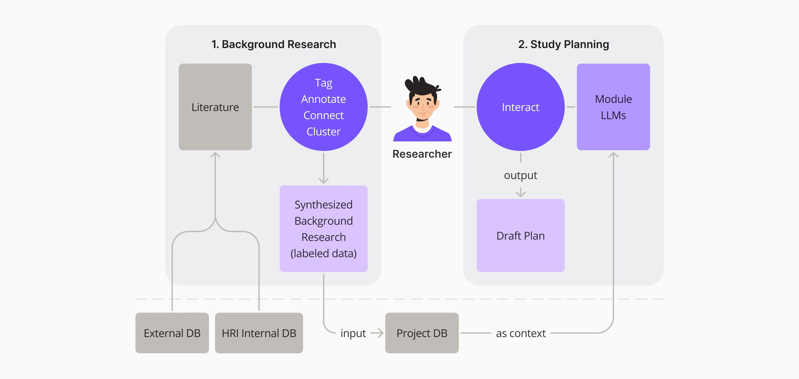
How might we label data in the background research process seamlessly?
Let Researchers Continue Their Usual Process in Aether
During background research, researchers review and synthesize complex papers to extract key points. Rather than asking them to change their workflow, Aether integrates annotation directly into their existing process — letting them highlight, tag, and synthesize within a familiar reading environment.
Streamlining Annotation and Synthesis to Boost Researcher Adoption
Annotate the Papers and Extract Key Findings
Researchers can select excerpts from the papers to annotate and tag with relevant variables. Aether automatically extracts and organizes these findings into a structured database, building a labeled knowledge base without disrupting the researcher's reading flow.
Synthesize Research Findings through Visualization
In addition, researchers can use the virtual whiteboard space to visualize any recurring themes or patterns across papers. This synthesis step helps Aether understand higher-level research themes, further improving the quality of AI-generated study plans.
How might we use the labeled data to make study planning easier?
Planning Studies with Labeled Data from Background Research and the Variables
Before planning, researchers need to enter the variables to the modular component as the context of the study they are going to plan. These variables — such as participants, environment, and task complexity — serve as inputs that Aether uses to generate a relevant and structured study plan draft.
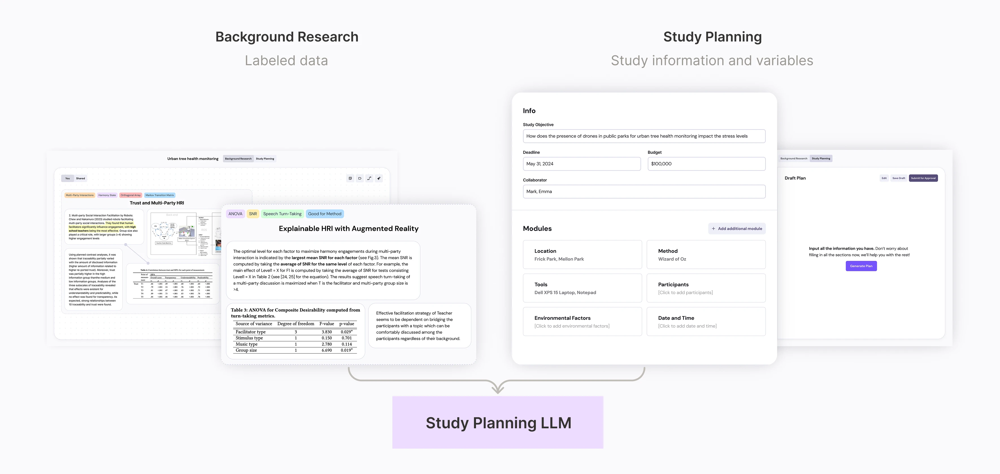
Automating the Logistical Considerations with LLM
Generate a Draft Plan with LLM
Based on the variables entered by the researchers and information gathered from background research, Aether can generate the first draft of the plan — including suggested protocols, participant criteria, and logistical considerations — giving researchers a structured starting point.
Edit the Draft Plan with Aether's Suggestion
When the researchers are not sure about a specific variable, Aether can make new recommendations based on the context and the labeled background research. Researchers can accept, modify, or reject each suggestion, allowing the AI to learn from their preferences over time.
Comprehensive Consideration of the Interdependencies between the Variables
Aether also considers interdependencies between each variable, reminding researchers of how changes in one module might affect others. This holistic view helps prevent oversights in complex, multi-variable real-world studies.
Scaling research efficiency through AI-assisted workflows
Growing an AI System that Helps the Organization Grow
When optimizing human-AI teaming research, Aether learns from the content researchers provide, refining its responses through continuous interaction. Over time, Aether will evolve into an "expert research assistant," boosting research efficiency across Honda Research Institute.
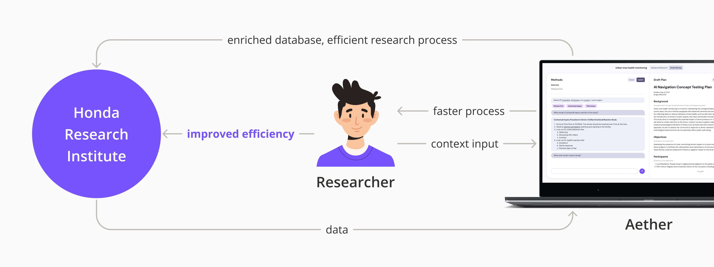
Validated Value and Adoption Potential of Aether
"It's always good to have a starting point like [the AI generated draft plan]."
We conducted prototype testing with researchers at Honda Research Institute to validate Aether's design. The feedback was positive, with researchers recognizing Aether's potential to streamline research workflows through its innovative background research tool and AI-generated draft study plans. These insights confirmed the need for a tool that can accelerate both research planning and execution.
"The framework of AI integration is helpful for us to adopt new methodologies"
Beyond Aether's potential for enhancing research efficiency, Honda Research Institute was particularly impressed by the framework we developed for implementing AI solutions internally. By seamlessly integrating AI systems into their existing processes, Honda Research Institute can drive innovative technological advancements more efficiently, in an effortless way.
Opportunities to Enhance Usability and Trust
While researchers were excited about Aether's potential, they also provided valuable feedback on areas for improvement, which helped shape our future development roadmap:
1. Enhancing Product Customizability to Fit Various User Needs
Researchers at HRI have diverse workflows and tool preferences. To increase Aether's adoption, we recognized the need for a modular and flexible design that can seamlessly integrate with existing research tools. For example, Aether could be a Google Scholar plugin enabling direct information extraction. This way, Aether could be an intuitive extension of researchers' current methodologies rather than an invasive replacement.
2. Improving AI Explainability to Increase Trust
During testing, researchers expressed uncertainty about the AI-generated study plans due to limited visibility into the decision-making process. We aim to address this by developing a more transparent approach that reveals the AI's reasoning, enabling researchers to understand and trust the generated recommendations.
The importance of system thinking in AI product design
Reflecting on this project, one of the most critical challenges was understanding why researchers would adopt Aether over their existing methods. This required not just designing a usable tool, but thinking holistically about how Aether fits within the researchers' entire ecosystem — their workflows, institutional processes, and long-term research goals.
From this experience, I learned the importance of system thinking in future-facing product design. When designing AI-powered tools, it is essential to consider not just the immediate interaction, but the broader value exchange between the AI system, the users, and the organization over time.
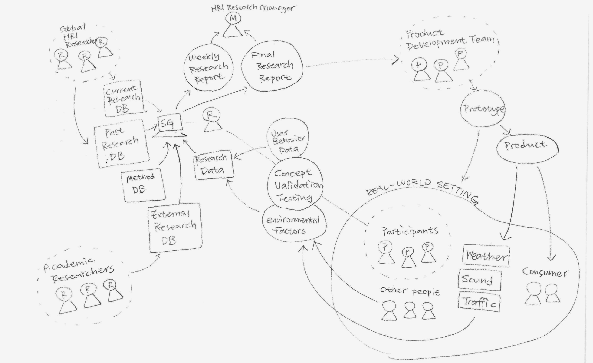
The system map I created to visualize the relationship and value flow of the Aether service system